В нашем видео уроке Вы найдете пошаговую инструкции монтажа водосточной системы RainWay
Пошаговая инструкция
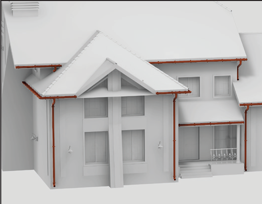
1. Перед монтажом системы необходимо определить расположение водосточных труб, с учетом направления отвода воды, размещения точек наземного водосбора и облика фасада. Одна воронка устанавливается не более чем на 10 м.п. желоба.
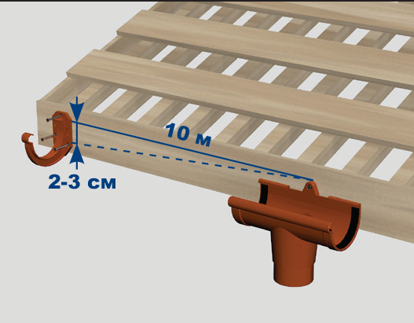
2. В местах организации слива установить воронки. Воронки должны находиться в нижних точках систем желобов.
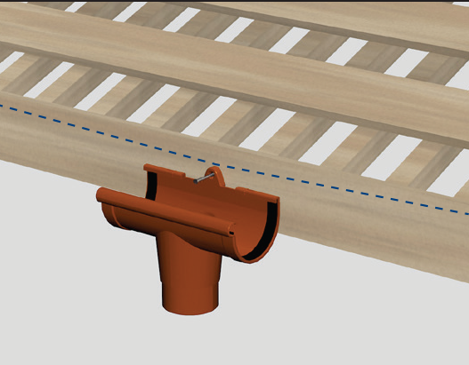
3. С помощью шнура определить уклон в сторону слива, примерно 2 см на 10 м.п. желоба и установить в высших точках крайние кронштейны желоба.
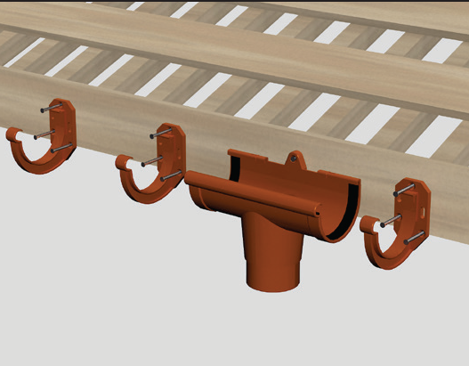
4. Кронштейны желоба устанавливаются из расчета - 6 штук на 1 желоб, но не более чем через 55 см, и максимум 10 см от краев воронок, муфт и углов желоба.
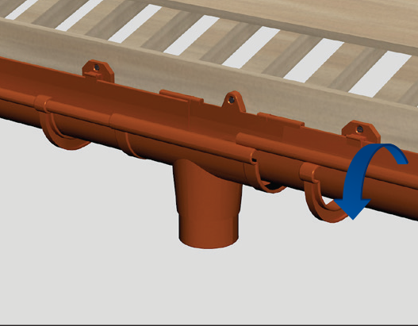
5. Желоба монтируются, начиная от воронки. При этом край желоба должен быть на уровне меток на воронке. Желоб заводится в кронштейны и соединительные элементы, начиная от задней стенки желоба.
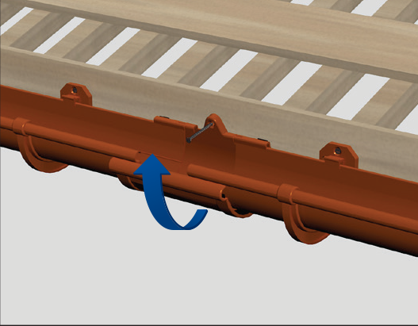
6. Желоба соединяются с помощью муфты. Края желобов должны быть на уровне отметок на муфте. После соединения муфта крепится к ветровой доске.
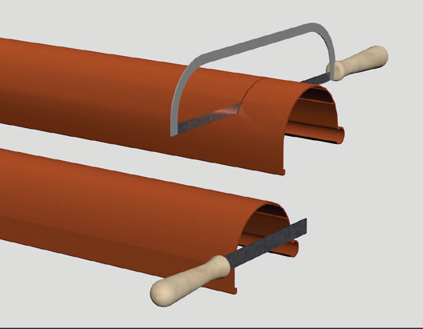
7. Для отрезания желобов и труб используется ножовка по металлу. Заусенцы зачищаются напильником.
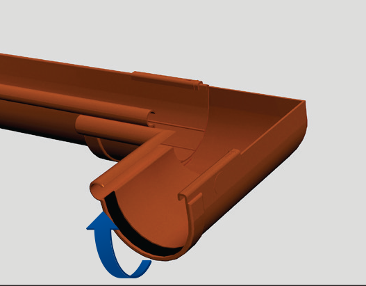
8. Углы желоба монтируются по меткам аналогично муфтам
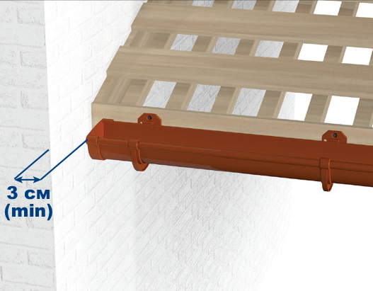
9. На окончание системы защелкиваются заглушки. Расстояние от заглушки до боковой доски крыши или до соседней стены не менее 3 см.
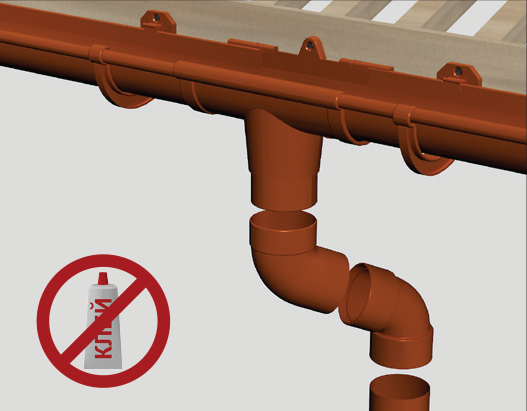
10. Монтаж труб начинают от воронки. При небольшом выносе крыши относительно стены используют муфту трубы или комбинацию одномуфтового и двухмуфтового отводов. Стрелка на муфтах и отводах указывает направление потока воды, и всегда направлена вниз.
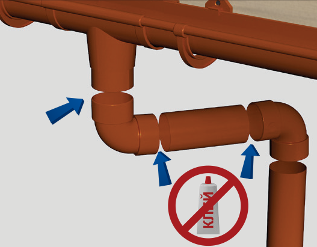
11. При значительном выносе крыши между двухмуфтовыми отводами применяется отрезок трубы. При этом обязательно приклеить верхний отвод к воронке. Возможно применение отводов с углом 87°.
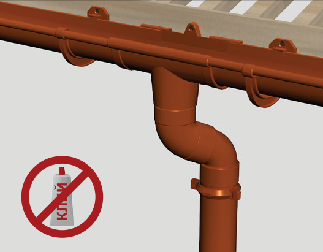
12. Непосредственно под отводом устанавливается кронштейн трубы. При вводе труб оставлять зазор примерно 10 мм для линейного расширения. Клей не используется.
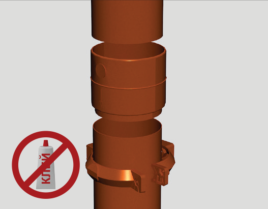
13. Для соединения труб применяются муфты. Стрелка на муфте указывает направление потока воды, и всегда направлена вниз. Под муфтой устанавливается кронштейн. Нижняя труба вводится не до конца. Зазор примерно 10 мм. Клей не используется.
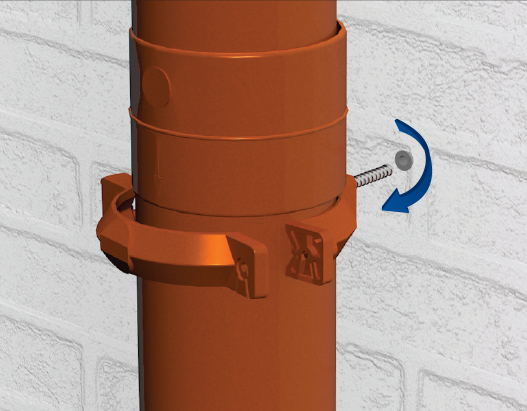
14. Кронштейны трубы монтируются на стене посредством дюбелей и специальных винт-шурупов. Расстояние между кронштейнами не должно превышать 1,5 м.
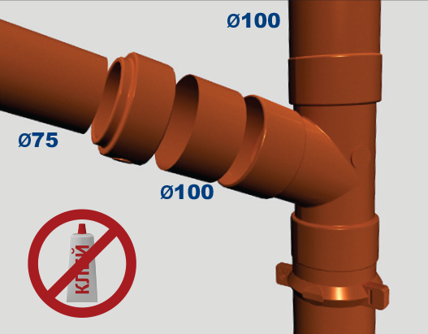
15. Тройники устанавливаются аналогично муфтам. В случае соединения трубы 75 мм с трубой 100 мм через тройник используется адаптер.
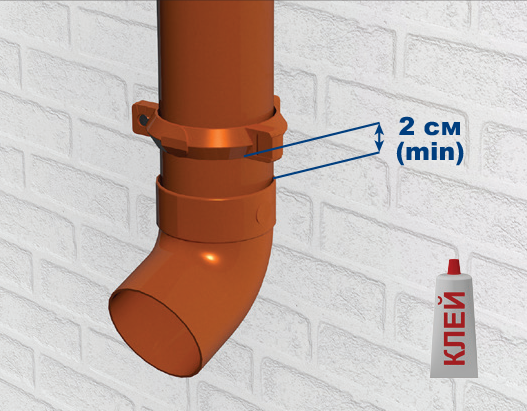
16. Нижний отвод приклеивается к трубе. Для склеивания используется только клей для ПВХ. Труба фиксируется кронштейном. Расстояние до отвода 2 см, до уровня земли не менее 20 с